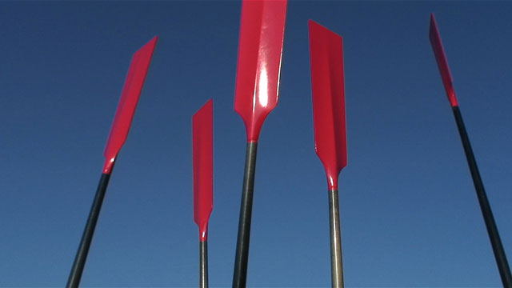

Ultimas Noticias
David Álvarez, muy cerca de Astillero
Las primeras novedades en la plantilla de la Sociedad Deportiva Tirán comienzan a producirse. Y no todas son positivas. La que ha causado más revuelo es la más que posible salida de uno de los hombres históricos de la entidad moañesa, el patrón David Álvarez, con destino a Astillero
Tirán asume seis posibles bajas
José Ángel Santiago, 'Truco', ya ejerce como entrenador de la Sociedad Deportiva Tirán. El preparador grovense acudió ayer a la sede del club moañés para presentar su proyecto al grueso de los remeros de la entidad y comenzar a conocer los mimbres con los que podrá contar para la nueva aventura en la Liga San Miguel.
Amegrove ya piensa en construir una nueva trainera campeona
«Inmellorable». Así calificaba ayer la presidenta del Amegrove Club de Remo, Noelia Otero, la temporada realizada por la trainera mejillonera, que los pupilos de Diego Portela completaron el domingo en aguas del País Vasco con un cuarto y último puesto en el play-off de ascenso con Meira dando el gran salto a la ACT.
Ultimos Resultados
Imágenes
REMO
Es uno de los deportes más duros que existen, aunque no es olímpico, puede ser tanto amateur como profesional. Los remos se sujetan en la regala de la embarcación sobre toletes y la unión entre estos y los remos es una especie de anillo trenzado de cuerda natural o sintética, que se llama estrobo.
Traineras
Competiciones entre embarcaciones de 13 remeros y un patrón típicas del norte de España. Las regatas se hacen en aguas de mar con ciabogas. La gran mayoría sobre recorrido de 4 largos y tres ciabogas a realizar, sobre una distancia total de 3 mn (5556 m). El decimotercer remero se sitúa en la proa (de ahí el nombre proel) y es el encargado de utilizar la pica o espaldín, que no es más que un remo más corto que sirve, apoyado en el branque de la trainera para forzar el giro de está en las ciabogas.